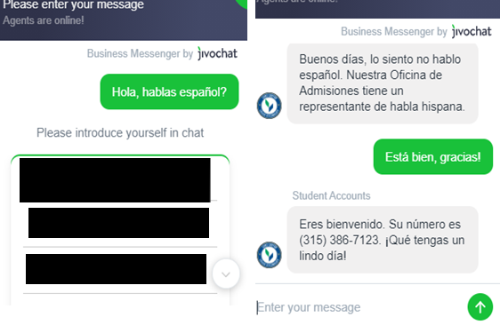
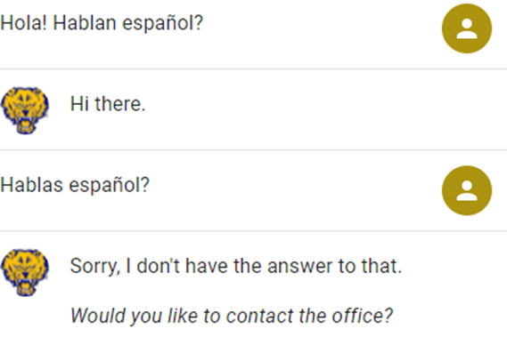
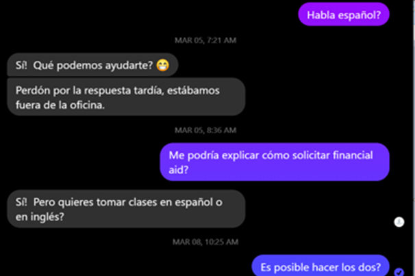
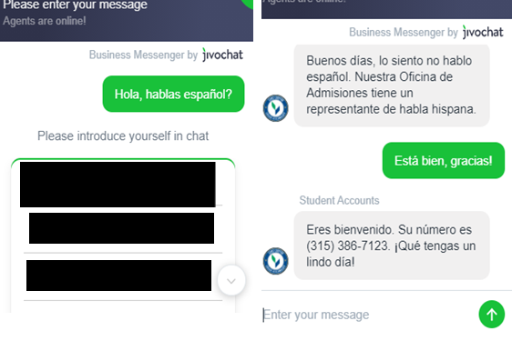
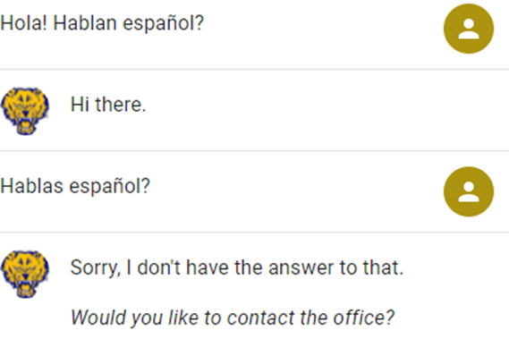
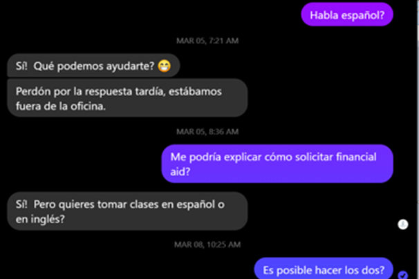

Higher Education Research
I work in a multi-institutional, cross-functional team to pursue practical solutions to issues related to language in higher education.
Since 2021, I have been collaborating with Dr. ZW Taylor on research into language diversity in higher education. Our project has examined the availability of multilingual instructions for admission and financial aid on college and university websites in the US. I worked in tandem with Linda Eguiluz to test AI chatbots on admissions and financial aid websites in our random sample of US public, private, and for-profit universities. We tested to see: 1. if the chatbots could understand Spanish, 2. if they could change to Spanish automatically, or, if not, how complex the process for manual change-of-language was, 3. if the chatbots redirected to a live representative and if that person could speak Spanish, 4. the quality of information provided by AI bots, and whether content on provided links was available in translation. In general we found that not many institutions use chatbots, and those that do rarely offer robust multilingual functionality. Our research highlights the pressing need for additional mulitlingual resources for prospective students as a key method for increasing diversity and access to higher education in the US.
 





Our team has presented this research at several conferences in the field of higher education research, and the projects have also resulted in two papers, which Dr. Taylor and I co-wrote. In addition, I have collaborated in a more minor capacity in the writing and editing of several additional papers in the realm of higher education language and access. I am also a member of the Center for Higher Education Linguistics and Translation, a mostly volunteer organization wich provides as-needed translation of informational materials (website content, application instructions, etc.) for use by US colleges and universities.